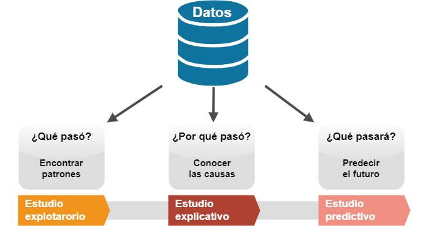
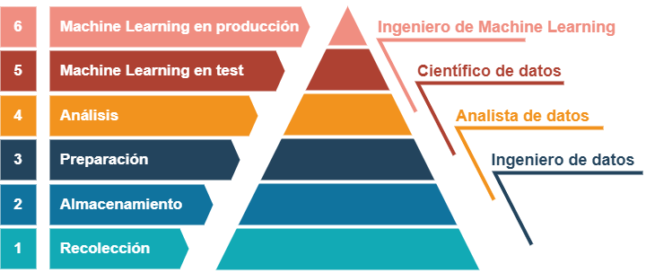

La ciencia de convertir los datos en valor#
2023-04-26
A las preguntas ¿qué pasó?, ¿por qué pasó? y ¿qué pasará? podemos intentar responder partiendo de los datos, obteniendo así una información muy valiosa para el negocio.

Con la finalidad de extraer este valor surgió la Ciencia de datos. En principio, Ciencia de datos haría referencia a todo aquello que contempla un proyecto de datos. Sin embargo, con el desarrollo de esta disciplina se han ido definiendo y especializando los procesos involucrados y los profesionales que trabajan en ellos.
Pirámide de un proyecto de datos
En correspondencia con la pirámide de Maslow (o jerarquía de las necesidades humanas), se suele plantear el siguiente diagrama en el que se representan las fases de un proyecto de datos.

Para convertir los datos en valor, el proyecto debería alcanzar al menos la cuarta fase, la de Análisis. Es en este estadio donde la amalgama de datos se ordena y se visualiza mediante gráficos, de manera que empieza a revelar la información que contiene. Aquí podemos comenzar a responder a las preguntas qué pasó, por qué pasó y qué pasará.
Las fases anteriores, las de recolección, almacenamiento y preparación de los datos, son en cualquier caso igual de importantes. Si no se obtienen buenos datos, nada de lo que se haga en los niveles superiores, por muy sofisticados que sean los análisis y las tecnologías empleadas, tendrá valor alguno, tal y como resume el dicho garbage in, garbage out («basura que entra, basura que sale»).
De todas formas, en el nivel de Análisis las herramientas tienen sus límites. La interpretación de los datos a menudo resulta difícil, y los estudios exploratorios y, en especial, los explicativos y predictivos pueden quedar reducidos a meras hipótesis.
Al igual que sucede en la teoría de Maslow, a medida que se satisfacen las necesidades más básicas se desarrollan objetivos más elevados. Así, una vez se han desmenuzado, visualizado y analizado los datos, puede llegar el momento de subir un escalón más, hasta el quinto, para echar mano del aprendizaje automático, más conocido como Machine Learning (ML).
Machine Learning#
La fase de Análisis nos sirvió para entender el problema, de forma que ahora nos encontraríamos en disposición de seleccionar las herramientas de ML más adecuadas para avanzar con el proyecto. En Machine Learning, los datos se utilizan para alimentar algoritmos matemáticos cuyos resultados intentan dar respuesta a las cuestiones planteadas. Con ellos se puede:
Extraer patrones de los datos (estudio exploratorio). Un buen ejemplo es la segmentación de clientes. El algoritmo descubre en los datos grupos de clientes que comparten similitudes, una información que puede ser aprovechada por ejemplo para personalizar campañas de marketing.
Inferir factores causales (estudio explicativo). Por ejemplo, para tratar de entender qué es lo que está motivando que se pierdan clientes. El algoritmo cuantifica el peso de cada uno de los factores que intervienen en el modelo de ventas que se ha configurado.
Predecir eventos futuros (estudio predictivo). Por ejemplo, ¿cuánto venderemos el mes que viene? El algoritmo pronostica la demanda con la mayor precisión posible para que podamos responder ante ella.
Entre los modelos utilizados para contestar a la pregunta por qué pasó y los utilizados para el qué pasará se puede producir una disyuntiva. En realidad, los dos tipos de modelos, los que infieren causas y los que predicen resultados, ambos intentan predecir la realidad, solo que los modelos causales son interpretables (más sencillos) y los puramente predictivos funcionan como una caja negra dentro de la cual no sabemos lo que sucede (son más complejos).
Imaginemos que estamos haciendo un estudio explicativo tratando de responder a la siguiente pregunta: ¿por qué estamos perdiendo clientes? En este caso, los modelos causales nos permiten entender cómo han llegado a los resultados en los que predicen la tasa de cancelación. Al ser interpretables, podemos ver los factores que intervienen y el peso relativo de los mismos.
Supongamos ahora que ya creemos saber por qué estamos perdiendo clientes y que queremos utilizar esta información para tomar medidas y contrarrestar la tendencia negativa. Entre esas medidas se encuentra la de dirigirse a los clientes que presentan mayor riesgo de abandono. Para ello, necesitamos identificarlos de la manera más precisa posible. Pasamos por tanto a hacer un estudio puramente predictivo, en el que intentaremos aprovecharnos de la potencia de los algoritmos más complejos, los cuales no sabemos muy bien cómo llegan a sus conclusiones, pero sabemos (por el entrenamiento y las pruebas a las que los hemos sometido) que son precisos.
Todo esto resulta muy estimulante. Partiendo de los datos, con una serie de modelos matemáticos y los conocimientos de programación necesarios para ejecutarlos, resulta que parece que podemos tener respuesta a todas nuestras preguntas. La realidad, sin embargo, es más complicada. Hay un dicho que dice que todo modelo es incorrecto, aunque algunos resultan útiles. No dejan de ser aproximaciones y por ello es bueno contrastar las cosas con la realidad.
Experimentación#
El trabajo de un Científico de datos se basa en el método científico: observación sistemática, medición, experimentación y formulación de hipótesis. La experimentación por tanto adquiere un papel fundamental y la misma se ayuda de la estadística para sacar conclusiones.
Los tests A/B son un método estadístico para hacer comprobaciones en un escenario real pero a pequeña escala, extrapolando de ello conclusiones generales. Por ejemplo, hemos visto que una manera de dar respuesta a la pregunta ¿por qué pasó? es utilizar modelos interpretables de ML. Pues bien, estos deberían ayudarse de experimentos para lograr resultados de forma más rápida y precisa. Se trataría por ejemplo de poner a prueba a grupos de clientes y medir sus respuestas ante diferentes opciones entre las que elegir. A veces no es posible hacer pruebas de este tipo, por el coste, por motivos éticos o por otras razones, y entonces hay que limitarse a inferir las causas de los modelos interpretables ya mencionados.
Si los resultados obtenidos con los modelos matemáticos y los experimentos con muestras de la realidad resultan satisfactorios, entonces llega el momento de plantearse subir al último nivel de la pirámide para implementar el modelo de ML en producción.
Machine Learning en producción#
Antes de alcanzar el último peldaño, se ha de medir la oportunidad de negocio que representa introducir el modelo en producción. Obviamente, no se querrá invertir en algo que no salga rentable, de manera que hay que realizar un análisis de coste-beneficio. Aquí, los experimentos y la estadística juegan una vez más un papel crucial. Se trata de hacer pruebas con grupos reducidos de clientes y ver si, en efecto, el modelo en producción genera las ventajas esperadas. El modelo puede funcionar muy bien y, sin embargo, no tener un efecto significativo y que al final no salgan las cuentas. En tal caso quizá haya que volver a recopilar más datos, investigar más o reformular las preguntas cambiando la cuestión que se quiere resolver. Un profundo conocimiento del negocio será clave para acertar.
Si los resultados son buenos y se decide seguir adelante, entonces hay que optimizar el modelo. Probar diferentes tecnologías, entrenarlas, validar los resultados. Es una tarea que el Científico de datos traspasa al Ingeniero de Machine Learning. Si el rendimiento es consistente y estable, entonces se ha de ir preparando el terreno para su implementación en los sistemas de producción.
Los sistemas de producción son aplicaciones de software que forman parte integral del negocio. Se pueden instalar por ejemplo en los sistemas CRM, la página web o apps para móviles. La integración de los modelos de ML en los sistemas de producción la llevan a cabo ingenieros de software y los encargados de la infraestructura. Es importante tenerlo en cuenta porque la implementación de ML en producción puede resultar costosa y hay que considerarlo a la hora de hacer el balance coste-beneficio antes mencionado.
El lanzamiento deberá producirse a pequeña escala, midiendo su efecto sobre un determinado grupo de clientes. Y, a partir de aquí, ir extendiéndolo de manera progresiva hasta que el modelo esté plenamente implantado en todo el sistema de producción, asegurándose de que funciona según lo previsto y preparando asimismo los procedimientos de actualización y mantenimiento del software. Es entonces cuando se habrá completado el proyecto de datos.
(Imagen de portada de geralt en Pixabay.)